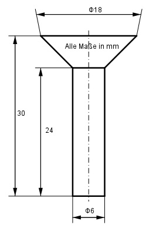

Aufgabe 284 Wie viel g wiegen 100 solcher Aluminiumnieten, wenn sie eine Dichte von 2,7 g/cm³ haben?  Der Niet besteht aus einem Zylinder Z und einem Kegelstumpf K. Z = л * r² * h r = 6 mm/2 = 3 mm Z = л * 3² mm² * 24 mm = 678 mm³ = 0,678 cm³ л * h K = -------- * (r1² + r1 * r2 + r2²) 3 h = 30 mm - 24 mm = 6 mm r1 = 18 mm/2 = 9 mm л * 6 K = ------- * (9² + 9 * 3 + 3²) mm³ 3 K = 2 * л * (81 + 9 * 3 + 9) mm³ K = 735 mm³ = 0,735 cm³ V = 0,678 cm³ + 0,735 cm³ = 1,413 cm³ m = 100 * V * р m = 100 * 1,413 cm³ * 2,7 g/cm³ = 381,5 g